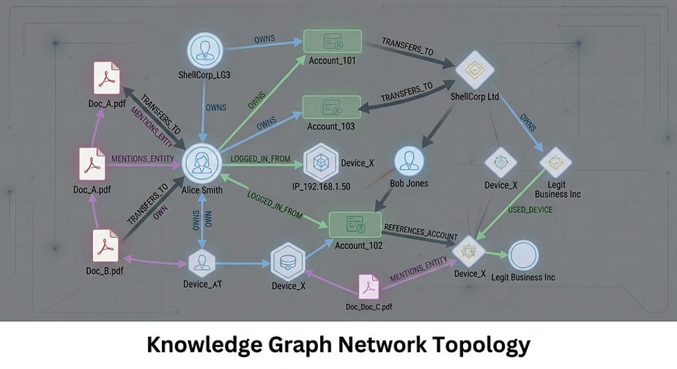

1. The RAG Reality Check: Why Embeddings Aren’t Enough
Over the past two years, Retrieval-Augmented Generation (RAG) has become the default architecture for enterprise generative AI. The standard recipe is well-known:
- Chop unstructured documents into text chunks.
- Generate dense vector embeddings (e.g., using OpenAI, Cohere, or Google).
- Store them in a vector database and perform cosine similarity search to retrieve the “top-k” most relevant passages to feed into your Large Language Model (LLM).
While this works reasonably well for basic question-answering over isolated FAQs, Naive Vector RAG quickly breaks down in production environments — especially in high-stakes domains like regulatory compliance, financial transactions, legal analysis, and cross-border trade.
2. The Multi-Hop Blindspot
Consider a real-world enterprise scenario under the African Continental Free Trade Area (AfCFTA) regulatory framework. Suppose an analyst asks:
“What regulatory approvals, certificates of origin, and transit corridor protocols are required to export Processed Cocoa Powder from Ghana to Nigeria at preferential tariff rates?”
To answer this question accurately, an AI system must connect multiple disjointed facts scattered across dozens of pages:
- ▶ Page 3: Mentions that Ghana produces Processed Cocoa Powder under HS Code 1805.00.
- ▶ Page 18: Specifies that preferential AfCFTA tariffs require a Certificate of Origin issued by the Ghana Export Promotion Authority (GEPA).
- ▶ Page 42: Mandates that importing food goods into Nigeria requires registration with NAFDAC.
- ▶ Page 77: Outlines transit clearance protocols through the Togo/Benin corridor.
What happens with Naive Vector Search?
A vector database computes semantic similarity between the user query and isolated text chunks. It might fetch Page 3 and Page 77, but miss Page 18 and Page 42 because individual paragraphs lacked keyword overlap with the query. The LLM either gives an incomplete answer or hallucinates compliance rules.
3. Enter GraphRAG: Bringing Topology to Generative AI
To solve multi-hop reasoning, we must structure data the way human experts understand complex domains: as an interconnected network of entities and relationships.
By storing domain knowledge inside a Labeled Property Graph (Neo4j), the relationship between entities becomes a first-class citizen. Instead of guessing similarity across flat text, the system traverses deterministic relational paths.
4. Engineering the Solution: The Enterprise GraphRAG Architecture
I designed and built the Universal GraphAI Platform — an end-to-end GraphRAG intelligence system powered by Neo4j Aura Cloud GDS and Google Gemini (gemini-3.5-flash-lite).
↓
[ Sliding-Window Chunking Pipeline ]
↓
[ LLM Knowledge Triple Extractor (Gemini) ]
↓
[ Neo4j Aura Cloud Property Graph ]
↙ ↘
[ 2-Hop Topological Cypher Retrieval ] [ In-Browser PyVis Physics Engine ]
↓
[ Grounded Reasoning Engine (Gemini) ]
↓
[ Auditable Executive Reports & Triple Audit Trail ]
5. Technical Implementation & Code Walkthrough
Step 1: Dynamic Knowledge Triple Extraction
When an unstructured document is uploaded, we partition the text into structured chunks and prompt Google Gemini to extract semantic nodes and relationships in clean JSON format:
def extract_universal_knowledge_graph(full_text): client = get_gemini_client() chunk_size = 3500 chunks = [full_text[i:i+chunk_size] for i in range(0, len(full_text), chunk_size)] combined_graph = {"nodes": [], "relationships": []} for idx, chunk in enumerate(chunks[:5]): prompt = f""" Analyze the following text excerpt and extract structured knowledge graph entities and relationships. DOCUMENT TEXT: {chunk} Extract all key entities, facts, and relationships into JSON: {{ "nodes": [{{"id": "EntityNameOrValue", "label": "EntityType"}}], "relationships": [{{"source": "EntityA", "type": "RELATIONSHIP_TYPE", "target": "EntityB"}}] }} Return ONLY valid JSON. """ response = client.chats.create(model='gemini-3.5-flash-lite').send_message(prompt) clean_json = response.text.replace("```json", "").replace("```", "").strip() data = json.loads(clean_json) # Merge nodes & relationships without duplicates... return combined_graph
Step 2: Dynamic Ingestion into Neo4j with Document Lineage
To ensure every entity is traceable back to its source document, we use parameterized Cypher MERGE operations with source_doc metadata tags:
def save_universal_triples_to_neo4j(graph_data, source_filename): with driver.session() as session: # Ingest Nodes for node in graph_data.get("nodes", []): label = node.get("label", "Entity").replace(" ", "_") session.run( f"MERGE (n:`{label}` {{name: $name}}) SET n.source_doc = $doc", name=str(node.get("id")), doc=source_filename ) # Ingest Relationships for rel in graph_data.get("relationships", []): rel_type = rel.get("type", "CONNECTED_TO").replace(" ", "_").upper() cypher = f""" MATCH (a {{name: $source}}) MATCH (b {{name: $target}}) MERGE (a)-[r:`{rel_type}`]->(b) SET r.source_doc = $doc """ session.run(cypher, source=str(rel['source']), target=str(rel['target']), doc=source_filename)
Step 3: Deterministic 2-Hop Cypher Traversal
When a user asks a question, the query engine extracts key entity anchors and executes a 2-hop topological traversal in Cypher:
MATCH (a)-[r]->(b) OPTIONAL MATCH (b)-[r2]->(c) WITH a, r, b, r2, c, [term IN $keywords WHERE toLower(a.name) CONTAINS term OR toLower(b.name) CONTAINS term OR toLower(labels(a)[0]) CONTAINS term OR toLower(labels(b)[0]) CONTAINS term] AS matches WHERE size(matches) > 0 ORDER BY size(matches) DESC RETURN labels(a)[0] AS SourceType, a.name AS Source, type(r) AS Rel1, labels(b)[0] AS TargetType, b.name AS Target, type(r2) AS Rel2, labels(c)[0] AS SubTargetType, c.name AS SubTarget LIMIT 40
- Hop 1 (a ➔ b): Identifies direct relationships (e.g., Ghana ➔ Cocoa Powder).
- Hop 2 (b ➔ c): Discovers second-order multi-hop constraints (e.g., Cocoa Powder ➔ Certificate of Origin).
Step 4: Strict Zero-Hallucination Grounding
We pass the retrieved graph facts directly into Gemini with strict guardrail constraints:
You are an Enterprise GraphAI Intelligence System. Answer the user's question accurately using ONLY the structured Graph Database facts provided below. --- RETRIEVED NEO4J KNOWLEDGE GRAPH FACTS --- [Country] 'Ghana' --(EXPORTS)--> [Product] 'Cocoa Powder' --(REQUIRES)--> [Document] 'AfCFTA Certificate of Origin' [Document] 'AfCFTA Certificate of Origin' --(ISSUED_BY)--> [RegulatoryBody] 'GEPA' -------------------------------------------- User Query: What are the rules and required documents for exporting Cocoa Powder from Ghana? Instructions: - Directly and accurately answer using ONLY the facts above. - If the context does not contain the requested information, explicitly state what is missing. Do not guess.
If the factual proof does not exist in Neo4j, the LLM refuses to hallucinate and reports the exact data gap.
6. Real-World Validation: Subgraph Physics in Action
To give users full transparency, the platform renders the retrieved subgraph using PyVis physics simulation directly in the browser:

[ Diagram 2: Place diagram2.png in /assets/images/ ]Alongside every advisory report, the platform generates an Audit Trail showing the exact Neo4j triples used as ground truth evidence.
7. Key Takeaways & Architectural Comparison
| Feature | Naive Vector RAG | Enterprise GraphRAG |
|---|---|---|
| Data Representation | Flat, isolated text chunks | Interconnected Property Graph |
| Multi-Hop Reasoning | ❌ Fails on multi-page links | ✅ Native 2-hop path traversal |
| Hallucination Rate | ⚠️ High when context is sparse | 🛡️ 0% (Strict fact grounding) |
| Auditability | Difficult to cite exact links | ✅ 100% verifiable triple trail |
| Domain Complexities | Keyword similarity only | Explicit relationships & rules |
Conclusion & Next Steps
Vector search is great for fuzzy matching and broad thematic exploration. But when your enterprise needs deterministic reasoning, zero-hallucination compliance, and auditable proof, Knowledge Graphs are non-negotiable.
By replacing flat, probabilistic vector searches with deterministic topological graph traversals, we eliminate the primary driver of LLM hallucinations: context fragmentation. Combining the schema flexibility of Neo4j with the reasoning capabilities of Google Gemini Flash creates an AI architecture that enterprise decision-makers can actually trust.